Background & Motivation
Machine learning object detection models are only as good as the data they are trained on. Acquiring large volumes of precisely labeled satellite imagery is costly and labor-intensive. High-quality, annotated geographic information system (GIS) data is notoriously difficult to find, and labeling high-resolution satellite images at scale requires significant human effort.
The project’s central hypothesis was that a Conditional Generative Adversarial Network (CGAN) could produce realistic, pre-labeled synthetic satellite images that, when used to augment sparse real datasets, would improve standard object detection model performance and reduce manual annotation burden.
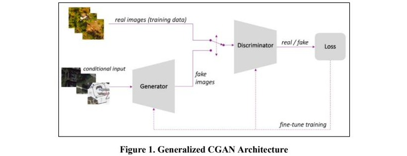
GANs consist of two competing neural networks. The Generator learns to produce increasingly convincing fakes; the Discriminator learns to catch them. Introducing conditional inputs to this framework allows the Generator to be steered: object classes, densities, and biome types can be specified at generation time, producing annotated output without any manual labeling.
Methods & Pipeline
Dataset Selection
Six high-quality satellite image datasets were evaluated before selecting one for training and evaluation.
xView
~1,000 high-res images • 600,000 labeled features • 60 object classes • DIU/NGA
FMoW
10,000 scenes • 83,000 features • 62 categories • RGB + 8-band • IARPA
DSTL
25 large 1km² images • 77,000 features • 30 classes • includes roadways
DOTA
2,000 images • 270,000 features • 18 classes • multi-source variability
ISPRS Benchmark
15,000 high-res images • 310,000 features • 37 classes • research only
AID
10,000 Google Earth images • 30 land-use classes • Chinese university collaboration
xView was selected for its consistently high image resolution, 60 object classes, and 600,000 labeled features. Labels were augmented to add cloud, biome, and road annotations required to control generated image content.
Data Preprocessing & Feature Images
To condition the CGAN, each satellite image was paired with a simplified “feature image” encoding bounding boxes, biome regions (using distinct colors per class), road overlays sourced from Google Maps, and cloud masks. These feature images are the direct inputs to the Generator during both training and inference.
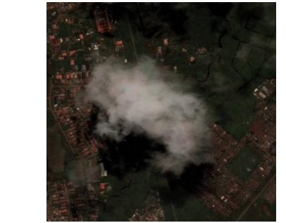
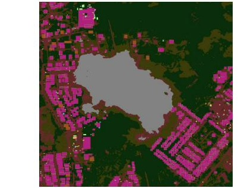
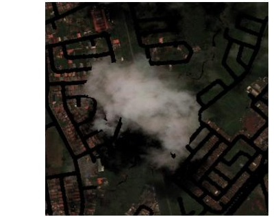
Synthetic Image Generation (map2sat)
The core map2sat model translates feature images into photorealistic satellite imagery, built on the pix2pix architecture. Four architectural variants were implemented and compared:
- Base pix2pix (map2sat): Encoder-decoder with skip connections; the Phase I baseline and best overall performer.
- SPADE: Residual SPADE blocks feed the feature image into each normalization layer to reduce information loss, based on Marin & Escalera (2021).
- Residual Block: Reduced encoder with a 32×32 bottleneck and four residual blocks for improved gradient propagation.
- Pix2pixHD: Multi-scale approach with two generators (coarse + detail) and three discriminators at different image scales.
Three custom loss functions were introduced: feature matching (aligns internal activations for real and synthetic images), perceptual loss (aligns activations in a pre-trained object detector), and an object detection loss (tests object recognizability). This combination is a novel contribution not present in prior literature.
Feature Image Generation Pipeline
To support fully synthetic generation without real image inputs, a three-stage feature image generator was built: (1) road and water features drawn from a library of real maps; (2) biome generation via a second CGAN mapping coverage statistics to feature maps; and (3) object placement using probability distributions derived from real-world object spacing and biome affinity. Building footprints were matched from a real library and rotated to align with local road geometry.
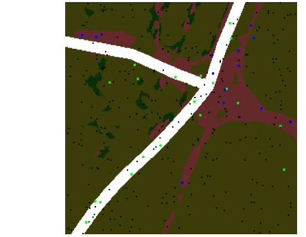
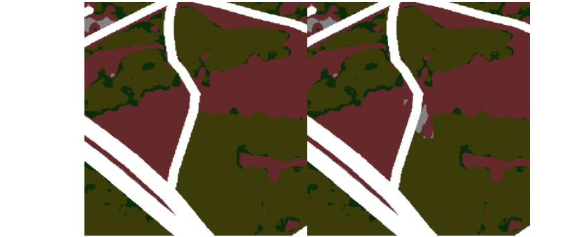
Augmentation Testing Pipeline
A novel automated testing pipeline was developed to run batches of augmentation experiments across all hyperparameter combinations. Each test trained an object detector twice: once on real images only, and once on real images plus CGAN-generated synthetic images. Over 50 experiments were run, each involving more than 100 model training iterations across Faster R-CNN and YOLO architectures.
Evaluation Metrics
Three families of metrics assessed both synthetic image quality and downstream object detection performance.
Results
CGAN Image Quality
The map2sat model produced visually plausible synthetic satellite images across multiple biome types. Iterative hyperparameter tuning found that normalized loss weights improved MSE from 99.15 to 66.49 and Kappa from 0.47 to 0.49. The original map2sat architecture outperformed all variants on most metrics.
| Metric | Map2Sat | SPADE | Residual Block |
|---|---|---|---|
| MSE | 66.59 | 74.81 | 78.05 |
| PSNR | 29.93 | 29.41 | 29.22 |
| SSIM | 0.537 | 0.456 | 0.415 |
| Seg. IoU | 0.414 | 0.365 | 0.335 |
| Kappa | 0.490 | 0.436 | 0.409 |
| Precision | 0.521 | 0.540 | 0.577 |
| Recall | 0.685 | 0.536 | 0.442 |
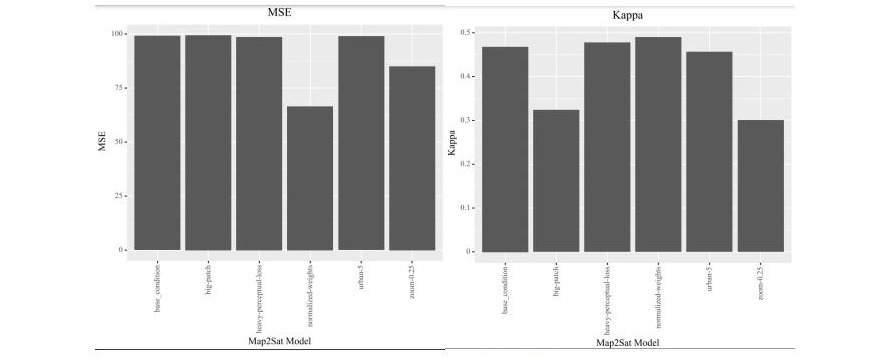
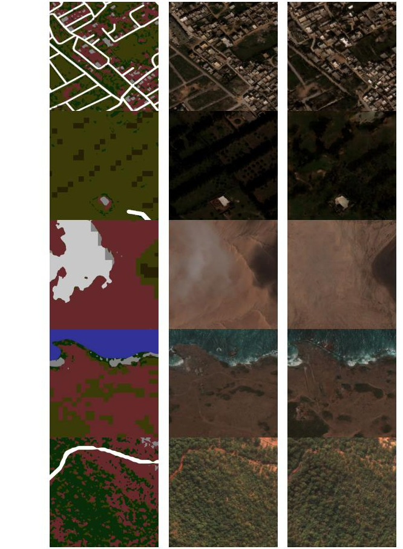
Object Detection Augmentation Tests
Both Faster R-CNN (15 randomized trials, 300 total models) and YOLO (11 trials, 220 models) were tested with real training sets of 10, 20, 50, and 100 images, each augmented with 0 to 100 synthetic images.
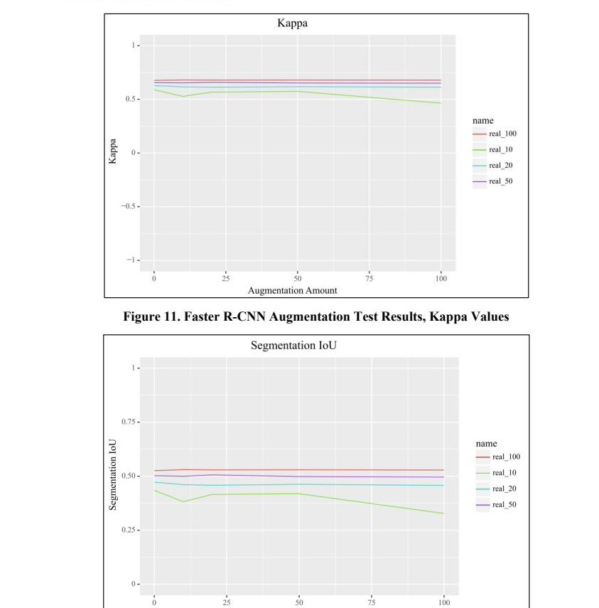
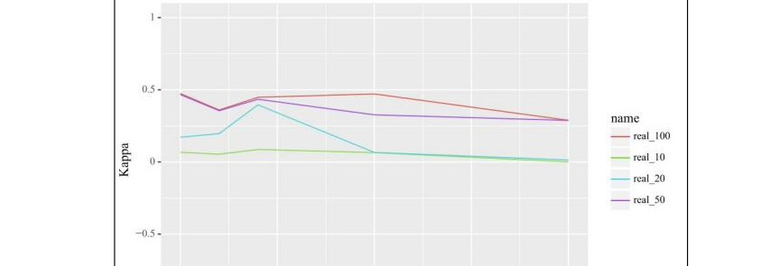
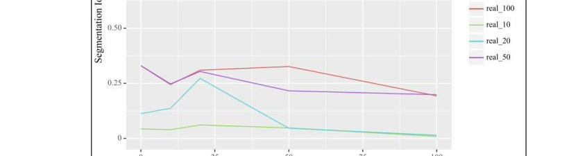
Conclusions
The core hypothesis was not validated. CGAN-generated synthetic images, even after extensive hyperparameter tuning and architectural variation, were not sufficiently realistic to benefit object detection model training. The xView dataset’s complexity was itself a confound: each image contained so many labeled objects that models could learn effectively from very few images, diminishing the marginal value of synthetic augmentation.
Two significant contributions emerged independently of the augmentation result:
- Feature Image Generator: A principled, probabilistic approach to generating semantically consistent input images with controllable biome, road, waterway, and object-class distributions.
- Augmentation Testing Pipeline: A reusable, automated framework for evaluating how dataset composition affects object detection model performance, applicable independently of any synthetic data source.
Diffusion Models as a Successor Architecture
Following the Phase II work, VISIMO conducted an IR&D investigation into replacing the CGAN with a Stable Diffusion (SD) model for the same synthetic satellite imagery task. The effort, documented in the SD-ISALD Final Report, was directly motivated by limitations observed in the CGAN work and aimed to determine whether a diffusion-based backbone could achieve the realism threshold needed to improve object detection performance.
Why CGANs Fall Short
The IR&D report identifies two structural problems with the CGAN approach that diffusion models are specifically designed to avoid:
- Mode collapse: CGAN training is an inherently unstable adversarial process. When the generator consistently fools the discriminator, it converges to a narrow range of outputs rather than drawing from the full image distribution. This limits the diversity of any synthetic dataset produced.
- Limited diversity: Even when mode collapse is avoided, GANs have been shown empirically to produce less diverse image samples than diffusion models (Dhariwal & Nichol, 2021).
Stable diffusion models use an iterative denoising process (DDPM scheduler) that is substantially more stable to train and naturally produces more varied outputs, as the model learns to predict and reverse applied noise rather than to directly fool a discriminator.
Architecture
VISIMO experimented with three generation approaches using HuggingFace’s diffusers library: unconditional generation, conditional generation guided by feature maps, and text-based image-to-image generation. The conditional approach most closely mirrors the CGAN pipeline. A UNet with skip connections, residual blocks, and attention layers takes a noisy image concatenated with a feature map as input and predicts the applied noise; reversing this process iteratively produces a synthetic satellite image conditioned on the input map. A separate text-guided pipeline (“StableDiffusionImg2ImgPipeline” using a pretrained runwayml/stable-diffusion-v1-5 model) was also tested with promising results at zero additional training cost, suggesting potential as a coarse global generator feeding a fine-detail local generator.
The same xView dataset and feature map preprocessing pipeline from Phase II were reused, enabling a direct comparison of CGAN and SD outputs on identical inputs.
Image Quality Results
Because stable diffusion models draw from a wider output distribution than CGANs, pixel-level similarity metrics (MSE, PSNR, SSIM) are not applicable for direct comparison. Instead, the IR&D evaluation used Fréchet Inception Distance (FID) and Kernel Inception Distance (KID), which compare feature distributions extracted by an InceptionV3 model across real and synthetic image populations. Lower FID and KID scores indicate higher image quality.
| Model | FID | KID Mean | KID Std. Dev. |
|---|---|---|---|
| CGAN | 274.97 | 0.200 | 0.060 |
| Stable Diffusion | 149.27 | 0.065 | 0.045 |
The stable diffusion model achieved an FID score 45.7% lower than the CGAN and a KID score 67.5% lower, indicating substantially higher image quality and better structural alignment with the real xView dataset distribution.
Augmentation Test Results
Augmentation tests were run using Faster R-CNN across combinations of 10, 20, 50, and 100 real images paired with 0, 25, 50, 75, and 100 synthetic images. Unlike the CGAN results, where synthetic data caused performance to stagnate or decline, the SD results showed clear improvement when real training data was scarce. A second round of tests focused on the data-scarce regime (1, 5, and 10 real images) produced the most significant findings.
The most striking result came from the extreme data-scarcity tests. With only 1 real image and no synthetic data, the Kappa score was 0 (the model failed entirely). Adding 25 synthetic images raised it to 0.55. With 5 real images and 25 synthetic images, Kappa rose from 0.19 to 0.57. These results demonstrate that stable diffusion synthetic imagery can provide a meaningful training signal precisely where labeled satellite data is most difficult to obtain.
A key caveat: the CGAN augmentation tests were averaged across 11 independent trials; the SD augmentation tests were run only once due to the substantially longer training time of diffusion models. Additional runs are needed to confirm statistical reliability of the improvements observed.
Remaining Work
The IR&D report identifies a hyperparameter search covering 972 model configurations (crop size, preprocessing value range, model depth, attention block count, attention heads, timestep embedding type, and loss function) that could not be completed within the IR&D timeline due to training cost. Completing this search is the primary recommended next step. Additional directions include UNet architecture alternatives and extending the generation pipeline to support object-class-specific generation, for which preprocessing work is already complete.
Recommendations
The team outlined a stepwise complexity ladder for future development, beginning with simple synthetic shapes and gradually scaling to full multi-class, multi-biome generation. Additional directions include:
- Stepwise complexity testing: Begin with simple colored shapes on single-color backgrounds, then progressively add symbolic transformations, one-hot encodings, multi-class variance, realistic backgrounds, and finally full xView-scale generation.
- Updated literature review: The GAN field advances rapidly. New architectures, loss functions, and training procedures published since the project began may directly address the shortcomings identified here.
- Diffusion model investigation: Diffusion models offer a more stable training process than GAN-based architectures and have demonstrated competitive image quality, representing a strong alternative backbone for synthetic satellite imagery generation.
- CGAN-based object removal: Pix2PixHD with Canny edge feature images showed promise for removing sensitive objects from satellite imagery without disturbing surrounding context.
- Satellite object augmentation: The reverse scenario adds synthetic objects to published satellite images for tactical or classification-management purposes.
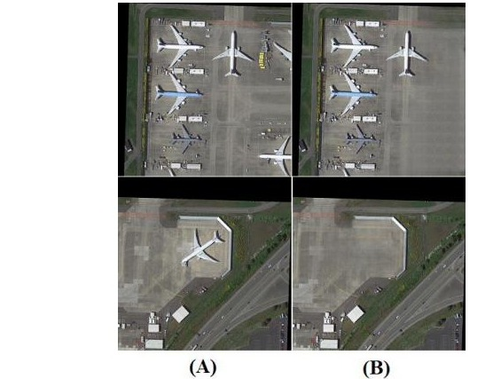
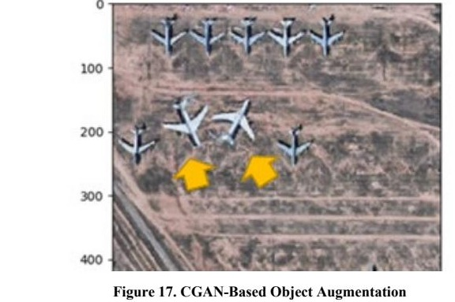
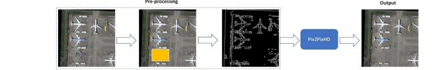